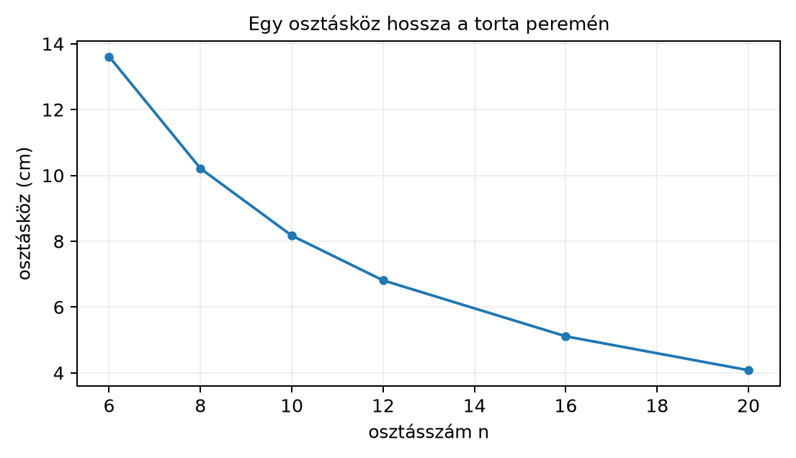
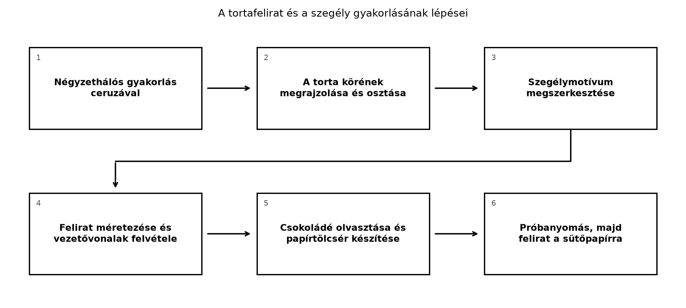

Vendég érkezik a cukrászdába: 60. születésnapra rendel tortát, és azt kéri, hogy a tetejére az legyen írva: „Boldog születésnapot, Margit néni!” A torta oldalára pedig egyszerű, egyenletes szegélydísz kerüljön. A cukrász nem kezdi el rögtön a csokoládéval írást. Előbb papíron megszerkeszti a feliratot és a szegélyt. Ha ez a tervezés kimarad, a felirat ferde lesz, a szegély összecsúszik, és a torta a jó alapanyagok ellenére is hibás hatást kelt.
Ebben az alfejezetben a szakrajz két alapfeladatát tanuljuk meg: a szegélydíszek szerkesztését és a tortafeliratok méretezését, gyakorlását. A cél nem az, hogy művészien rajzolj, hanem az, hogy pontosan, ismételhetően és arányosan dolgozz.
Képzelj el felülnézetből egy 26 cm átmérőjű kerek tortát. A torta tetején van egy külső, kb. 2–3 cm széles gyűrű: ide kerül a szegélydísz. A középső, nagyobb körfelület a felirat helye. A szegély úgy lesz egyenletes, ha a kört óraszerűen egyenlő részekre osztjuk, és minden osztásközbe ugyanaz a motívum kerül. A felirat pedig úgy lesz egyenes, ha előbb meghúzunk egy alapvonalat és egy betűmagasságot jelző felső vonalat.
Definíció. A szegélydísz a sütemény, torta vagy tányér szélén futó, ismétlődő dekorációs minta. Lehet csokoládéból, fondánból, vajkrémből, zseléből vagy marcipánból.
Definíció. A motívum a szegélydísz egyetlen, önmagában is értelmezhető eleme, például pont, hullámvonal, levél, virág, kis ív vagy csepp.
Definíció. A ritmus a motívumok szabályos ismétlődése. A jó ritmushoz minden elemnek közel azonos méretűnek és azonos távolságúnak kell lennie.
Definíció. A zsinórírás folyamatos, dőlt, egymáshoz kapcsolódó betűkből álló írás. A cukrászatban gyakran használják, mert gyorsan írható, mégis elegáns hatást kelt. A „zsinór” elnevezés arra utal, hogy a betűk folyamatos vonallal, zsinórszerűen kapcsolódnak.
Szabály. Mielőtt élelmiszerre írnál vagy díszítenél, a tervet papíron szerkeszd meg. A hibás arányokat papíron olcsóbb javítani, mint a tortán vagy a csokoládélapon.
Szabály. A feliratot és a szegélyt mindig az adott tortamérethez méretezd. A kör kerülete és az elérhető felület határozza meg, hogy hány motívum fér el, és milyen nagy lehet a betű.
A szegélydíszeket és feliratokat legegyszerűbb először négyzethálós papíron gyakorolni. A négyzetháló segít megtartani a vízszintes és függőleges irányt, a betűk és motívumok egyenlő méretét, valamint az egyenlő távolságokat.
A gyakorlás menete:
Példa. Egy egyszerű szegélymotívum lehet két pont és köztük egy kis hullám. Egy 2 cm magas sávban a pont átmérője legyen 0,5 cm, a hullám hossza 1,5 cm, a teljes motívum hossza 2 cm. Ha a torta szélére 8 cm-es osztásköz jut, akkor ebből három motívum fér el, vagy a motívumot arányosan nagyítani kell.
Az ábra gyakorlólapján a fekete pont a kezdőpont, a nyíl a mozdulat iránya; a jobb oldali felirat a szokásos csőrtípust adja meg.
A kör alakú tortán a szegélydísz akkor egyenletes, ha a kört egyenlő részekre osztjuk. Ehhez körzőre, vonalzóra és szögmérőre van szükség.
A szerkesztés lépései:
ahol a motívumok száma.
Továbbvitt eredmény. A kör egyenlő osztása a dísztortarajzok alapja. Azt a módszert használjuk majd a Sablonok: pasztillarajzok, térbeli és figurális sablonok alfejezetben is, amikor a dísztorta felülnézetét szerkesztjük meg.
Számítás. Adott egy 26 cm átmérőjű torta, amelynek szélére 12 egyforma motívumból álló szegélyt tervezünk. Mekkora az egy motívumra jutó osztásköz a torta kerületén?
A kör kerülete:
Az egy osztásköz hossza:
Behelyettesítve:
A motívum tehát kb. 6,8 cm széles lehet a torta szélén. Ha a motívum ennél nagyobb, összeér a szomszédos elemmel.
Ellenőrzés. Visszaszorzással: , ami a kerekítés miatt nagyon közel van a kerülethez. Az eltérés nem számottevő.
Az alábbi ábra azt mutatja, hogyan csökken az egy motívumra jutó osztásköz, ha több motívumot teszünk ugyanakkora tortára.

Az ábráról leolvasható, hogy ha például 16 kis motívumot szeretnénk, egy elemre már csak kb. 5,1 cm jut. Ezért minél apróbb a minta, annál több elem fér el, de annál nehezebb egyenletesen kivitelezni.
A tortafeliratnál három alapvető betűtípust érdemes gyakorolni: az álló betűt, a dőlt betűt és a zsinórírást.
| Betűtípus | Jellemző vonalvezetés | Mire alkalmas |
|---|---|---|
| Álló betű | Függőleges tengelyű, tömör vagy kontúros betűk | Egyszerű, jól olvasható feliratok |
| Dőlt betű | A betűk tengelye jobbra dől | Elegánsabb, kézzel írott hatás |
| Zsinórírás | Folyamatos, egymáshoz kapcsolt betűk | Gyors felirat, klasszikus cukrászati stílus |
Szabály. A betűk akkor hatnak rendezettnek, ha azonos a betűmagasságuk, a dőlésszögük és a betűk közötti távolság.
A betűközök méretezéséhez használjunk egyszerű segédarányt. Egy betű szélessége átlagosan a betűmagasság 70%-a, a két betű közötti hézag pedig a betűmagasság 20%-a. Ez tanulási arány, amelyet a választott betűtípus és a gyakorlott kéz szerint lehet módosítani.
A felirat elhelyezésekor először mindig jelöljük ki a felirat dobozát, azaz azt a téglalapot, amelybe az írás kerül. Ennek menete:
Számítás. A torta közepére 18 cm széles helyre szeretnénk írni, hogy „BOLDOG” legyen. Hány cm magas betűket válasszunk?
Legyen a betűmagasság , a betűszélesség , a betűköz . A betűk száma . A felirat hossza:
Átrendezve:
Behelyettesítve:
Tehát kb. 3,5 cm magas betűkkel írhatjuk a feliratot. A betűk szélessége ekkor , a hézag pedig .
Ellenőrzés. Számoljuk vissza a hosszt:
A felirat tehát kitölti a rendelkezésre álló részt, de nem lóghat le a tortáról.
A következő ábra a két számítást egy felülnézetben egyesíti: a 26 cm-es torta peremén a 12 egyenlő osztást ( cm, ) és középen a „BOLDOG” felirat dobozát ( cm, cm) a vezetővonalakkal. Az online kiadásban a méretek csúszkával változtathatók, és az ábra jelzi, ha a felirat kilóg a használható területből.
Cél. Tanuld meg egy 26 cm átmérőjű torta tetejére tervezett 12 elemű szegély és a „BOLDOG” felirat papíron történő megszerkesztését, majd gyakorlását csokoládéval sütőpapíron.
Eszközök és anyagok. Négyzethálós papír, pauszpapír, sütőpapír, körző, vonalzó, szögmérő, hegyes ceruza, radír, vékony filc, olló, papírtölcsér, étkezési minőségű csokoládé vagy bevonó, kis spatula, fogpiszkáló.
Higiénia. A munkához tiszta, zsírmentes felületet használj. A papírtölcsért tiszta kézzel készítsd. Az élelmiszerrel közvetlenül érintkező papír vagy fólia élelmiszer-minőségű legyen. Ha nyomtatott mintalapot helyezel sütőpapír alá, ügyelj arra, hogy a nyomdafesték ne érintkezzen a csokoládéval.
Jogszabály. Az élelmiszerrel érintkező anyagokra, így a díszítéshez használt papírra és fóliára vonatkozó követelményeket az 1935/2004/EK rendelet keretében kell értelmezni; a konkrét termék csak akkor használható, ha gyártói jelölése szerint élelmiszerrel érintkezésre alkalmas (ellenőrizendő: aktuális csomagolóanyag-előírás és gyártói adatlap).
Biztonsági korlát. A csokoládét vízfürdő fölött, kis lángon olvaszd. A vízgőz forró, ezért ne hajolj fölé. Ügyelj arra, hogy víz ne csepegjen a csokoládéba, mert csomós lesz. A gyakorlás során csak élelmiszer-minőségű anyagot kóstolj; a rajzolóeszközt munka közben ne tartsd a szádban.
A teljes gyakorlat folyamatábrája:

Technológiai lap – szegély- és feliratgyakorlat.
| Anyag | Mennyiség | Megjegyzés |
|---|---|---|
| Étcsokoládé vagy bevonó | 80 g | Díszítésre temperálva vagy melegítve |
| Sütőpapír | 2 ív | Élelmiszer-minőségű |
| Négyzethálós papír | 2 lap | Gyakorláshoz |
| Pauszpapír | 1 lap | Mintamásoláshoz |
| Összesen (élelmiszer) | 80 g | Csak a csokoládé; a papírok nem élelmiszer |
Műveleti sorrend.
Technológiai kulcspontok. A csokoládé hőmérséklete a tanult temperálási tartományban legyen, hogy a vonalak fényesek és ropogósak legyenek. A csokoládé hőfoka a gyártói adatlap és a temperálás módja szerint változik (ellenőrizendő: temperálási hőfok, lásd A csokoládé temperálása: kristályszerkezet és temperálási görbe alfejezetben).
Allergének. A gyakorlótermék allergéntartalma a felhasznált csokoládé és bevonó szerint változik. Étcsokoládé esetén jellemzően tejet és szóját jelölhet a gyártói adatlap, keresztszennyeződésként dióféléket is. Az allergénsort mindig a tényleges nyersanyagok alapján állítsd össze.
Minőségi jellemzők. A szegély egyenletes ritmusú, a motívumok azonos méretűek, nem érnek össze. A felirat egyenes, a betűk magassága és dőlése egységes. A csokoládé vonala fényes, törés nélkül emelhető.
Tárolás, felhasználás. A gyakorolt csokoládéminta hűvös, száraz helyen, szennyezéstől védve tárolható, vagy feldolgozható. Az elkészült díszt ne tároljuk nedves hűtőben, mert a csokoládé bepárásodik.
A szegélydísz és a felirat minőségét szemrevételezéssel és méréssel ellenőrizzük. Nézd meg a munkát merőlegesen, majd kis távolságból is.
A munkát akkor minősítsd jónak, ha a hiba szemmel alig látható, és a minta vendég elé kerülhet.
Hiba. A szegélymotívumok összeérnek, vagy az utolsó motívum már nem fér el.
Ok. A motívum szélességét nem a kör kerületéhez méretezték.
Megelőzés. Számold ki az osztásközt, és a motívumot ennél keskenyebbre tervezd.
Hiba. A felirat lefelé vagy felfelé fut.
Ok. Nem húztak alapvonalat, vagy a kéz a vezetővonal nélkül fokozatosan eltért.
Megelőzés. Mindig szerkeszd meg az alsó és felső vezetővonalat, és ceruzával előrajzold a feliratot.
Hiba. A csokoládéfelirat vonala szakadozik, vagy a betűk vastagsága ugrál.
Ok. A csokoládé túl sűrű vagy túl hideg, a tölcsér nyílása nem megfelelő, vagy a nyomás egyenetlen.
Megelőzés. Állítsd be a csokoládé hőmérsékletét és a tölcsér nyílását. Gyakorolj először sütőpapíron.
Hiba. A dőlt betűk dőlésszöge eltérő.
Ok. Minden betűt külön, más szögben indítottak.
Megelőzés. Rajzolj egyforma ferde segédvonalakat, vagy használj cellasablont.
Egy rendezvényre 28 cm átmérőjű tortát rendel a vendég. A kérés: „Isten éltesse, János bácsi!” felirat, körben 16 darab kis levélmotívum. A cukrász először kiszámolja az osztásközt:
A levélke tehát legfeljebb 5,5 cm hosszú lehet. Ezután a feliratot méri. A rendelkezésre álló szélesség 20 cm. A hosszú szöveg miatt két sorba töri: „Isten éltesse” és „János bácsi!” A hosszabb sor, az „Isten éltesse” 12 betűből áll, ezért a betűmagasság a 39.1.8 képletével . A cukrász 1,8 cm-es betűt választ, hogy a szóköznek és a felkiáltójelnek is maradjon hely (a szóközt egy betűköz és a betűmagasság fele, azaz szélességűnek vehetjük). Visszaszámolva a 12 betűs sor , tehát elfér a 20 cm-en. A papírsablonon először kipróbálja, majd csokoládéval is megrajzolja. A vendég az átadáskor csak annyit lát, hogy a felirat egyenes, a szegély szabályos.
1. feladat (A) Fogalmazd meg, mi a különbség a motívum és a ritmus között.
2. feladat (A) Egy 18 cm átmérőjű desszerttányér szélére 9 darab pöttyöt tervezel. Számítsd ki a két pötty közötti osztásközt a kör kerületén.
3. feladat (B) A tortára a „JÁNOS” feliratot szeretnéd tenni. A rendelkezésre álló hossz 14 cm. A betűszélesség , a betűköz . Mekkora betűmagasságot válassz, ha a felirat egysoros?
4. feladat (B) Egy szegélydísznél három elem ismétlődik: pont, hullám, levél. Hogyan osztanád be a kört, hogy minden elem azonos helyet kapjon, és a ritmus ne csússzon el?
5. feladat (C) Egy tanuló a „BOLDOG SZÜLETÉSNAPOT” feliratot (19 betű) 3,5 cm-es betűkkel egysorosra tervezte egy 20 cm-es tortára. Számítsd ki a 39.1.8 képletével a felirat hosszát. Mi volt a hiba, és mit javasolnál?
6. feladat (D) Készítsd el a gyakorlati útmutató szerint a 26 cm-es kör 12 elemű szegélyét és a „BOLDOG” feliratot papíron, majd gyakorold a feliratot csokoládéval sütőpapíron. Értékeld a munkád a Minőségellenőrzés szempontjai szerint.
1. feladat. A motívum egyetlen díszítőelem, például egy levél vagy pont. A ritmus a motívumok szabályos ismétlődése: azonos méret, azonos távolság, jól felismerhető sorrend.
2. feladat. Adott: , .
A pöttyök közötti távolság a köríven kb. 6,3 cm.
3. feladat. A „JÁNOS” 5 betűből áll, tehát . Adott: .
Kb. 3,3 cm magas betűt érdemes rajzolni.
4. feladat. Ha három elem ismétlődik, célszerű a kör osztásszámát 3-mal oszthatóra választani, például 12, 15 vagy 18 részre. Így minden csoport pontból, hullámból és levélből áll, és az ismétlődő csoportok közötti távolság is egyenletes. A csoportok sorrendjét jelöld a szerkesztőpapíron, nehogy két levél vagy két pont kerüljön egymás mellé.
5. feladat. A hiba az volt, hogy a tanuló nem méretezte a feliratot a tortához. A képlet szerint 3,5 cm-es betűkkel a felirat hosszú, ami messze nem fér el egy 20 cm-es tortán. A torta használható szélessége a szegélygyűrű (2–3 cm) és a szabad sáv (1–1,5 cm) levonása után csak kb. 13 cm, és egy sorban ez legfeljebb -es betűt engedne, ami nem kivitelezhető. Javítás: törd két sorba („BOLDOG” / „SZÜLETÉSNAPOT”). A hosszabb sor 13 betű: ; ha ez túl kicsi, rövidítsd a szöveget.
6. feladat. A gyakorlati feladat értékelésénél figyeld: egyenletes-e a 12 motívum, párhuzamos-e a felirat alapvonala a torta szélével, azonos-e a betűk magassága, fényes-e és egyenletes-e a csokoládé vonala. A várt eredmény: egy 26 cm-es körvonalon 12 darab, egymástól egyenlő távolságra lévő motívum, középen „BOLDOG” felirat kb. 3,5 cm betűmagassággal.
A szegélydísz a torta szélén futó, ismétlődő minta. A jó szegélyhez a kört egyenlő részekre kell osztani. Az egy osztásköz hossza , a középponti szög pedig . A feliratot mindig méretezd a rendelkezésre álló szélességhez. A betűmagasság egyszerű tanulási képlete: , ahol a betűk száma. Az álló betű jól olvasható, a dőlt betű elegánsabb, a zsinórírás folyamatos és gyors. A gyakorlás négyzethálós papíron kezdődjön, majd sütőpapíron csokoládéval folytatódjon. Csak élelmiszer-minőségű papírt és anyagot használj, és a csokoládé hőmérsékletét a temperálási szabályok szerint tartsd. A papíron elkövetett hiba olcsón javítható, a tortán már nehéz. A kör osztását és a felirat-eligazítást a dísztortarajzoknál is használni fogjuk.
A geometriai képletek (körkerület, középponti szög, arányos méretezés) általános matematikai alapok, nem igényelnek jogszabályi ellenőrzést. A betűszélességre és betűközre használt és arányok didaktikai segédértékek, amelyek a választott betűtípustól és a kézírástól függően módosíthatók. Az élelmiszerrel érintkező papírra és fóliára vonatkozó követelményeket a 1935/2004/EK rendelet keretében kell ellenőrizni. A csokoládé felolvasztási és temperálási hőfoka a gyártói adatlap és a A csokoládé temperálása: kristályszerkezet és temperálási görbe alfejezet szerint ellenőrizendő. Hagyományos cukrászati feliratok arányaira a Magyar Cukrász Ipartestület oktatási kiadványai vagy cukrász szakkönyvek lehetnek irányadó források, de a vizsgán a rajz pontossága és az arányosság a mérvadó.